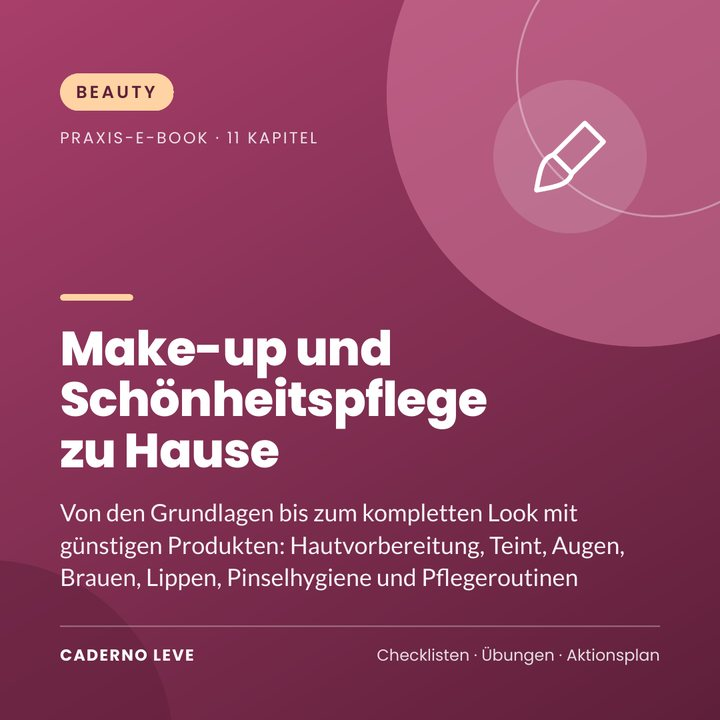

Make-up und Schönheitspflege zu Hause
Make-up von den Grundlagen bis zum kompletten Look mit günstigen Produkten: Hautvorbereitung, Teint, Augen, Brauen, Lippen, fertige Looks, Hygiene und Selbstfürsorge.
Dieses E-Book ist in Kürze erhältlich.
Sichere Zahlung und PDF-Auslieferung über Kiwify
Preis in brasilianischen Real (BRL). Beim Bezahlen siehst du den Betrag in deiner Währung.
Du willst lernen, dich zu schminken, ohne viel Geld und ohne Kompliziertheit? Starte mit den Grundlagen und komm zum kompletten Look.
Make-up und Schönheitspflege zu Hause vermittelt einfache Techniken für alle Hauttöne, mit einem schlanken, günstigen Set.
Du lernst, die Haut vorzubereiten, Foundation und Concealer zu wählen, Rouge und Highlighter aufzutragen, Brauen zu formen, Augen vom Basic bis Smoky zu schminken, Lippenstifte auszusuchen, fertige Looks zusammenzustellen und auf Hygiene und Haltbarkeit der Produkte zu achten.
Das nimmst du mit
- Günstiges Grundset
- Schritt für Schritt für jede Gesichtspartie
- Fertige Looks in 5 bis 25 Minuten
- Leitfaden zu Hygiene und Haltbarkeit
- Selbstfürsorge-Routine
Das steckt drin
- Kapitel 1Das günstige Grundset
- Kapitel 2Die Haut vorbereiten
- Kapitel 3Foundation und Concealer
- Kapitel 4Puder, Rouge, Konturieren und Highlighter
- Kapitel 5Augenbrauen
- Kapitel 6Augen: vom Basic bis Smoky
- Kapitel 7Lippen
- Kapitel 8Fertige Looks
- Kapitel 9Hygiene, Haltbarkeit und Sicherheit
- Kapitel 10Abschminken und Abendpflege
- Kapitel 11Selbstfürsorge über das Make-up hinaus
- ExtraZusammenfassung und Aktionsplan für die Umsetzung
- ExtraArbeitsblatt und Checkliste zum Ausdrucken
Für wen es ist
- Make-up-Einsteiger
- Alle, die schnelle Looks für den Alltag wollen
- Alle, die Selbstfürsorge zu Hause suchen
Für wen es nicht ist
- Ersetzt keine dermatologische Beratung
- Empfiehlt keine bestimmten Marken
Bonus: Arbeitsblatt „Mein Set und meine Looks“ — Produktübersicht und Lieblingslooks.
Wichtiger Hinweis
Dieses E-Book enthält allgemeine Tipps zur Schönheitspflege zu Hause. Es ersetzt nicht den Rat einer Dermatologin, eines Dermatologen oder einer Fachperson für Haar und Kopfhaut. Mach vor der Anwendung neuer Produkte einen Verträglichkeitstest (Allergietest), befolge die Hinweise auf dem Etikett und brich die Anwendung bei Reizungen ab. Es werden keine Marken genannt oder empfohlen.